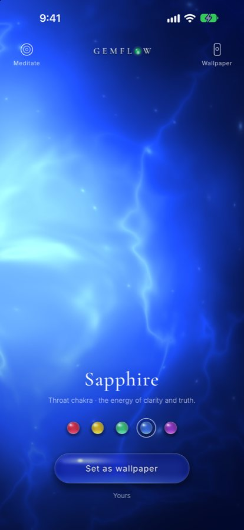

Throat chakra · sapphire
The throat chakra: where your silence becomes a voice
When the words rise to your lips and you let them sink back down, when you nod while something in you is quietly saying no, when you can no longer tell your own voice from everyone else’s, it is not that you have nothing to say. Your voice is waiting for a clear sky. The old traditions place it in the hollow of your throat: a lotus the color of smoke, holding a full moon.

Sapphire, the blue stone of the throat chakra, as a living light in the Gemflow app.
When your voice goes quiet
When did you last hear your own voice?
Perhaps you are the one who listens. The one who softens every sentence, who rehearses a conversation all night and then says “it’s fine” in the morning. The words you held back did not disappear. They gathered in your throat like weather: a tightness when you are about to speak, a lump when you are moved, a voice that shakes when it matters most. Your throat has been keeping them for you. In the old picture of the body, this is exactly where they wait.
Vishuddha · Viśuddha
The lotus that makes you pure sound
The Sanskrit name of the throat chakra is Vishuddha (Viśuddha), “pure”, or more fully, “especially pure”. The Devi Bhagavata gives a lovely reason for the name: here the soul becomes pure by seeing the Hamsa, the swan, the bird of the inner self. Arthur Avalon notes another name for this lotus, Bharatisthana, “the abode of the goddess of speech”. Its element is space, the open sky through which every sound must travel, and its seed sound is Haṃ. So the place where your voice is born was imagined as a clear sky with a white swan in it. What you say from here does not need to be loud. It only needs to be true.
Smoke and moonlight
A smoky lotus with a full moon inside
“In the throat is the Lotus called Vishuddha, which is pure and of a smoky purple hue.”
That is how the Sat-Chakra-Nirupana (Ṣaṭ-Cakra-Nirūpaṇa), written by Pūrṇānanda in Bengal in 1577, pictures the throat lotus: sixteen petals the color of smoke and violet. On them shine the sixteen vowels in crimson, the open sounds from which every word begins, “distinctly visible to him whose mind is illumined”. At its heart is a circle “white like the full Moon”, and an elephant “white as snow”. Imagine it: every sound your voice can open with, written in red light around a moon. Before you ever speak, the whole alphabet of your truth is already there.
The gateway
A door made of moonlight
“This (region) is the gateway of great Liberation.”
The same text calls the moon inside this lotus a gateway, “the gateway of great Liberation” for one whose senses are pure. Its commentary adds that one who knows this place “sees the three periods”: the past, the present and the future. Perhaps that is what speaking the truth feels like. The moment the words leave you, something opens. You are no longer carrying yesterday’s silence into tomorrow. The door was never locked. It was only waiting for your voice.
Sapphire
A stone the color of a clear sky
Today the throat chakra is painted blue, and sapphire is its stone, paired by their shared color. Sapphire has always been the stone of the sky. In the Book of Exodus, the ground beneath the feet of God is “a paved work of a sapphire stone, and as it were the body of heaven in his clearness”. In the twelfth century, Marbode, Bishop of Rennes, praised sapphire as being “like the pure sky” and called it “the gem of gems”; he wrote that it helped its wearer “to hear and to understand the obscurest oracles”. A stone that lets you hear what is hidden: it belongs at the throat. Sapphire does not give you a voice. It reminds you that you have always had one, and that it is clear.
From the heart to the voice
What the heart feels, the throat says
In the old picture the chakras rise like lotuses along the spine. Below the throat lies the heart, where you feel. The throat is the bridge where feeling becomes sound, and above it the brow and the crown open into silence and light. When the heart has something to say and the throat lets it pass, the two are no longer at war. This is why speaking a true sentence, even a small one, can feel like breathing out after a long time.
A ritual
Opening a clear sky at your throat
- Sit with your spine tall. Let your jaw unclench and your tongue rest softly behind your teeth.
- Hold a piece of sapphire, or any blue stone, at the hollow of your throat, or let sapphire’s blue light glow in Gemflow in front of you, with 741 Hz playing softly.
- Breathe in and imagine a clear blue sky opening at your throat, with a full moon at its center.
- Breathe out on a long, low hum. If you like, let the hum become a soft ham, and feel the sound move under your fingers.
- Ask yourself one question, “What have I been waiting to say?”, and listen without answering.
- Before you open your eyes, say one true sentence out loud, however small. For example: My voice is welcome here.
The rainbow road
How the voice changed its colors
The throat has worn three colors on its way to us, and each of them is a kind of light seen through air.
- 1577 · In Bengal, Pūrṇānanda writes the Sat-Chakra-Nirupana (Ṣaṭ-Cakra-Nirūpaṇa). The throat lotus has sixteen petals “of a smoky purple hue”, with a full white moon inside.
- 1919 · Sir John Woodroffe, writing as Arthur Avalon, carries the text into English as The Serpent Power.
- 1927 · C. W. Leadbeater, in The Chakras, sees the throat center as blue and green, “silvery and gleaming, with a kind of suggestion as of moonlight upon rippling water.”
- Today · Over the 20th century the seven chakras came to be painted as a rainbow, and the throat took the blue between green and indigo. Smoke, then moonlight, then sky.
Your daily companion
Sapphire and 741 Hz in Gemflow
In Gemflow, the throat is sapphire: a deep blue light that glows from inside the stone, clear at the center and dark as evening at the edges, alive on your screen and never the same twice. Touch it and it follows you. Open Meditate and it rises and settles with your breath while a soft 741 Hz tone rings beneath guqin harmonics and singing bowls. One minute a day to hear your own voice again. More about its tone: 741 Hz, the frequency of expression; more about the stone: sapphire.
Walk the other chakras
Every chakra has its own color and its own stone: which stone goes with each chakra color. For the frequency of each, see the chakra stones and frequencies chart. Below the voice: which stone belongs to the heart chakra, the solar plexus and its fire, and the root chakra, the red light that brings you home. Above it: the crown chakra, a thousand petals open to the sky.
The throat chakra at a glance
| Sanskrit name | Vishuddha (Viśuddha), “pure”; also Bharatisthana, “abode of the goddess of speech” Avalon 1919, introduction |
|---|---|
| Why “pure” | The soul becomes pure by seeing the Hamsa (swan) Devi Bhagavata VII.35, in Avalon |
| Where | The throat, at the base of the neck Verse 28 |
| Petals | Sixteen, “of a smoky purple hue” Verse 28 |
| Letters on the petals | The sixteen vowels, crimson Verse 28 |
| Element | Ether (space), a circle “white like the full Moon” Verse 28 |
| Seed sound | HAM (Haṃ) Verse 28, commentary |
| Carrier and deities | An elephant “white as snow”; Sadashiva, half white and half gold; Shakini, whose “raiment is yellow” Verses 28–30 |
| Called | “The gateway of great Liberation” Verse 30 |
| Color in 1927 | Blue and green, “silvery and gleaming”, like moonlight on rippling water Leadbeater, The Chakras |
| Color today | Blue Modern rainbow system |
| Stone (modern) | Sapphire, and other blue stones such as lapis lazuli and blue lace agate Modern crystal practice |
| In Gemflow | Sapphire, 741 Hz Gemflow app |
Verse numbers refer to the Sat-Chakra-Nirupana (1577) in Arthur Avalon, The Serpent Power (1919).
Questions
What color is the throat chakra?
The throat chakra is blue in the modern system. In the 1577 Sat-Chakra-Nirupana its sixteen petals are “of a smoky purple hue” around a white full moon; Leadbeater (1927) described it as silvery blue and green.
What does Vishuddha mean?
Vishuddha (Viśuddha) is the Sanskrit name of the throat chakra and means “pure” or “especially pure”. Avalon’s Serpent Power (1919), citing the Devi Bhagavata, says the soul is made pure here by seeing the Hamsa.
Where do the throat chakra’s colors come from?
The throat chakra’s colors come from three layers: the 1577 Sat-Chakra-Nirupana (smoky purple petals, white moon), Leadbeater’s The Chakras (1927, blue and green, like moonlight on water), and the 20th-century rainbow system (blue).
Which stone goes with the throat chakra?
Sapphire is a stone often paired with the throat chakra, following its modern blue color; lapis lazuli, blue lace agate and aquamarine are also common. The older Sanskrit texts do not name a stone.
Which frequency goes with the throat chakra?
The throat chakra is usually paired with 741 Hz, a Solfeggio frequency, in modern meditation music. The pairing is modern practice, not from the older texts. In Gemflow, sapphire carries 741 Hz.
What is the seed sound of the throat chakra?
The seed sound (bija) of the throat chakra is HAM (Haṃ), the seed of ether or space, according to the Sat-Chakra-Nirupana as translated in The Serpent Power (1919).
How do I meditate with sapphire?
To meditate with sapphire, sit tall, unclench your jaw, hold the stone at the hollow of your throat and breathe out on a long, soft hum for a few minutes. End by saying one true sentence aloud.
Can sapphire heal my throat?
Sapphire is not a medical treatment. People use it as a companion for meditation and ritual, and as a reminder to speak honestly and gently.
Notes and sources
- Pūrṇānanda, Ṣaṭ-Cakra-Nirūpaṇa (Sat-Chakra-Nirupana, 1577), in Arthur Avalon (Sir John Woodroffe), The Serpent Power (1919). Verse 28: “In the throat is the Lotus called Vishuddha, which is pure and of a smoky purple hue. All the (sixteen) shining vowels on its (sixteen) petals, of a crimson hue, are distinctly visible to him whose mind (Buddhi) is illumined. In the pericarp of this lotus there is the Ethereal Region, circular in shape, and white like the full Moon. On an elephant white as snow is seated the Bija of Ambara”; the Bija is “Ham”. Verse 30: Shakini, whose “raiment is yellow”; the region of the Moon “is the gateway of great Liberation for him who desires the wealth of Yoga and whose senses are pure and controlled.” Commentary on verse 31: “He sees the three periods”, past, present and future. Introduction: the Vishuddha Chakra or Bharatisthana (“abode of the Devi of speech”), “so called because the Jiva is made pure (Vishuddha) by seeing the Hangsa”, after the Devi Bhagavata (VII.35).
- C. W. Leadbeater, The Chakras (Theosophical Publishing House, 1927): the throat center “has sixteen spokes… There is a good deal of blue in it, but its general effect is silvery and gleaming, with a kind of suggestion as of moonlight upon rippling water. Blue and green predominate alternately in its sections.”
- George Frederick Kunz, The Curious Lore of Precious Stones (1913), “Sapphire”: Marbode, Bishop of Rennes (12th century), on the sapphire as “like the pure sky… the gem of gems”, which “enabled them to hear and to understand the obscurest oracles”. Kunz notes that the biblical “sapphire” was probably lapis lazuli, though later readers understood it as the true sapphire.
- Exodus 24:10 (King James Version, 1611): “and there was under his feet as it were a paved work of a sapphire stone, and as it were the body of heaven in his clearness.”
- Kurt Leland, Rainbow Body: A History of the Western Chakra System from Blavatsky to Brennan (Ibis Press, 2016), on how the rainbow sequence took shape in the 20th century.
- Pairing sapphire and 741 Hz with the throat chakra is a modern meditation practice. Gemflow is for relaxation, meditation and ritual; it is not a medical product.
© 2026 Gemflow · Home · Chakra colors · Chakra stones chart · Root chakra stone · Solar plexus chakra stone · Heart chakra stone · Crown chakra stone · 741 Hz · Ruby · Citrine · Emerald · Sapphire · Amethyst · YouTube · Privacy